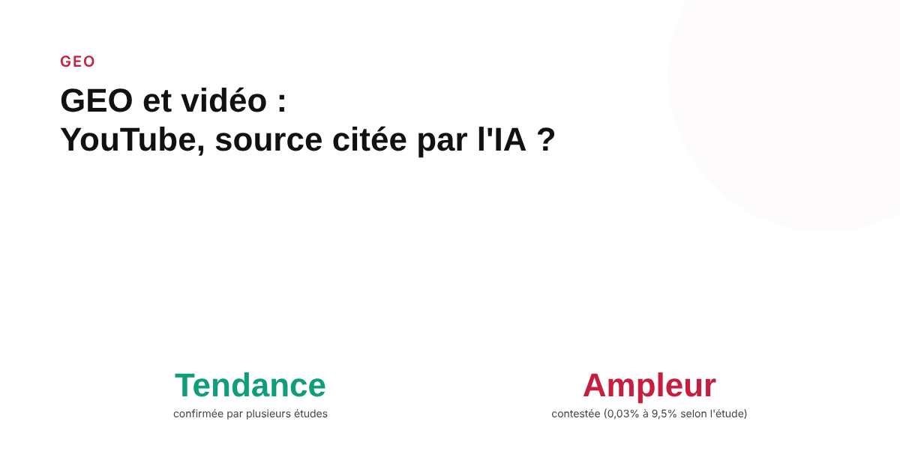
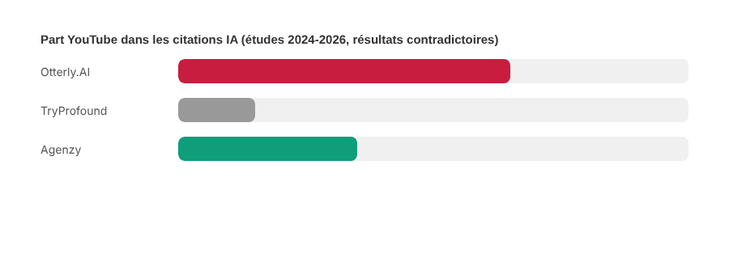

GEO et vidéo : YouTube est-il une source que les IA génératives citent ?
Plusieurs études publiées en 2026 s'accordent sur une tendance : Perplexity et Google AI Overviews citent YouTube bien plus souvent que ChatGPT. Elles ne s'accordent en revanche pas du tout sur l'ampleur de cet écart. Voici ce qu'on peut raisonnablement en tirer.

Une nouvelle génération d'études GEO s'est penchée en 2026 sur une question précise : les IA génératives citent-elles des vidéos YouTube comme source dans leurs réponses ? La réponse courte est oui, mais la réponse complète révèle un problème classique du secteur — plusieurs analyses indépendantes pointent dans la même direction sur la tendance générale, tout en donnant des chiffres qui se contredisent largement sur son ampleur.
Ce qui converge : Perplexity et AI Overviews citent YouTube bien plus que ChatGPT
Une étude 2026 d'Otterly.AI rapporte que Perplexity et Google AI Overviews concentrent l'essentiel des citations YouTube observées, tandis que Gemini et Copilot y recourent rarement. Une analyse de BrightEdge portant sur la période de mai 2024 à septembre 2025 va dans le même sens : elle décrit un net avantage de citation de YouTube par rapport à toute autre plateforme vidéo sur Google AI Overviews, Google AI Mode, ChatGPT et Perplexity. Conductor observe une différence de comportement cohérente : Perplexity oriente souvent ses réponses vers YouTube sur certaines intentions de recherche, tandis que ChatGPT Search tend à privilégier Wikipedia pour les mêmes intentions.
Ce qui diverge fortement : l'ampleur exacte
C'est là que les chiffres deviennent difficiles à exploiter tels quels. Otterly.AI situe la part de YouTube à environ 9,5 % des citations de ChatGPT contre 22,7 % pour Perplexity. Une étude 2026 d'Agenzy, portant sur 2,28 millions de citations analysées, trouve des proportions radicalement différentes : seulement 0,03 % des citations de ChatGPT pointeraient vers YouTube, contre 4,7 % pour Google AI Overviews. TryProfound, sur une période allant d'août 2024 à juin 2025, situe YouTube à environ 2,0 % des citations globales de Perplexity et 1,9 % pour AI Overviews — des ordres de grandeur sans rapport avec les deux études précédentes.

Pourquoi ces chiffres ne se recoupent pas
Chaque étude utilise une période d'analyse différente, un échantillon de requêtes différent, et surtout une définition différente de ce qui compte comme une « citation ». Ces études sont très majoritairement publiées par des éditeurs d'outils SEO/GEO comme contenu marketing destiné à démontrer la valeur de leur plateforme de suivi — pas comme de la recherche évaluée par des pairs. Cela ne les rend pas inutiles : la direction qu'elles indiquent toutes ensemble (YouTube pèse plus chez Perplexity et AI Overviews que chez ChatGPT) est un signal cohérent et répété. Mais aucune ne devrait être citée comme « le » chiffre de référence sur le sujet.
Ce que ça change concrètement pour une stratégie GEO
Le signal fiable à retenir est qualitatif, pas quantitatif : si une marque cible une visibilité dans les réponses de Perplexity ou de Google AI Overviews sur des requêtes à forte composante « comment faire » ou démonstrative, une présence vidéo structurée sur YouTube (titre clair, description détaillée, chapitrage) constitue une source de citation plausible à ne pas négliger. Pour une stratégie centrée sur ChatGPT, l'effort de contenu écrit bien structuré reste la priorité la mieux documentée, plusieurs analyses situant la part de YouTube dans ses citations très en-dessous de celle des autres plateformes IA, même si l'écart exact varie.
FAQ
Perplexity et Google AI Overviews citent-ils vraiment plus YouTube que ChatGPT ?
Oui, sur ce point précis plusieurs études indépendantes de 2026 convergent dans le même sens : Perplexity et Google AI Overviews citent YouTube nettement plus souvent que ChatGPT. En revanche, l'ampleur exacte de l'écart varie fortement selon l'étude consultée, et aucun chiffre unique ne doit être cité comme une vérité absolue.
Faut-il croire un chiffre précis comme « YouTube représente X % des citations IA » ?
Avec prudence. Ces études sont presque toutes des analyses d'éditeurs d'outils SEO/GEO, publiées comme contenu marketing plutôt que comme recherche évaluée par des pairs, et leurs échantillons, périodes et méthodes diffèrent. Elles sont utiles pour repérer une tendance, pas pour citer un pourcentage précis comme un fait établi.
Une vidéo YouTube peut-elle vraiment remplacer un article de blog pour le GEO ?
Les deux formats ne s'excluent pas et répondent à des logiques de citation différentes selon la plateforme IA interrogée. Rien dans les études disponibles n'indique qu'une vidéo remplace un contenu écrit bien structuré : elle s'ajoute comme une source possible supplémentaire, avec une probabilité de citation qui varie selon l'outil IA utilisé.
Envie d'une stratégie GEO qui ne repose pas sur un seul chiffre contesté ?
Pour aller plus loin, voir la page GEO, et l'article Le guide complet GEO pour ranker numéro 1 dans les LLMs.
Pour continuer sur ce sujet.